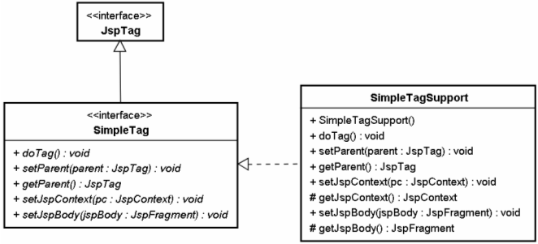

|
|
看起來Simple Tag的開發似乎不會太難，主要就是繼承SimpleTagSupport類別、重新定義doTag()方法、定義TLD檔案以及使用taglib指示元素。不過實際上還有很多東西需要解釋。 SimpleTagSupport實際上實作了javax.servlet.jsp.tagext.SimpleTag介面，而SimpleTag介面繼承了javax.servlet.jsp.tagext.JspTag介面。  所有的JSP自訂Tag都實作了JspTag介面， JspTag介面只是個標示介面，本身沒有定義任何的方法。SimpleTag介面繼承了JspTag，定義了Simple Tag開發時所需的基本行為，開發Simple Tag標籤處理器時必須實作SimpleTag介面，不過通常繼承SimpleTagSupport類別，因為該類別實作了SimpleTag介面，並對所有方法作了基本實作，所以只需要在繼承SimpleTagSupport之後，重新定義感興趣的方法即可，通常就是重新定義doTag()方法。 當JSP網頁中包括Simple Tag自訂標籤，若使用者請求該網頁，在遇到自訂標籤時，會按照以下的網頁來進行處理：
每一次的請求都會建立新的標籤處理器實例，而在執行doTag()過後就銷毀實例，所以Simple Tag的實作中，建議不要有一些耗資源的動作，像是龐大的物件、連線的取得等，正如Simple Tag名稱所表示的，這並不僅代表它實作上比較簡單（相較於Tag的實作方式），也代表著它最好用來作一些簡單的事務。 同樣的道理，由於Tag File轉譯後會成為繼承SimpleTagSupport的類別，所以在Tag File中，也建議不要有一些耗資源的動作。 由於標籤處理器中被設定了PageContext，所以可以用它來取得JSP頁面的所有物件，進行所有在JSP頁面Scriptlet中可以執行的動作，所以之後就可以用自訂標籤來取代JSP頁面上的Scriptlet。 JspFragment就如其名稱所示，是個JSP頁面中的片段內容。在JSP中使用自訂標籤時若包括本體，將會轉譯為一個JspFragment實作類別，而本體內容將會在invoke()方法進行處理。以Tomcat為例，<f:if>本體內容將轉譯為以下的JspFragment實作類別（一個內部類別）： private class Helper
extends org.apache.jasper.runtime.JspFragmentHelper { // 略... public boolean invoke0( JspWriter out ) throws Throwable { out.write("\n"); out.write(" 你的秘密資料在此！\n"); out.write(" "); return false; } public void invoke( java.io.Writer writer ) throws JspException { JspWriter out = null; if( writer != null ) { out = this.jspContext.pushBody(writer); } else { out = this.jspContext.getOut(); } try { // 略... invoke0( out ); // 略... } catch( Throwable e ) { if (e instanceof SkipPageException) throw (SkipPageException) e; throw new JspException( e ); } finally { if( writer != null ) { this.jspContext.popBody(); } } } } 所以在doTag()方法中使用getJspBody()取得JspFragment實例，且呼叫其invoke()方法時傳入null，這表示將使用PageContext取得預設的JspWriter物件來作輸出回應（而並非不作回應）。接著進行本體內容的輸出，如果本體內容中包括EL或內層標籤，則會先作處理（在<body-content>設定為scriptless的情況下）。在上面的簡單範例中，只是將<f:if>本體的JSP片段直接輸出（也就是invoke0()的執行內容）。 如果呼叫JspFragment的invoke()時傳入了一個Writer實例，則表示要將本體內容的執行結果，以所設定的Writer實例作輸出，這個之後會再進行討論。 如果執行doTag()的過程在某些條件下，必須中斷接下來頁面的處理或輸出，則可以丟出javax.servlet.jsp.SkipPageException，這個例外物件會在JSP轉譯後的_jspService()中如下處理： ...
try { // 丟出SkipPageException例外的地方 // 其它JSP頁面片段 // 略... } catch (Throwable t) { if (!(t instanceof SkipPageException)){ out = _jspx_out; if (out != null && out.getBufferSize() != 0) try { out.clearBuffer(); } catch (java.io.IOException e) {} if (_jspx_page_context != null) _jspx_page_context.handlePageException(t); } } } ... 簡單地說，在catch中捕捉到例外時，若是SkipPageException實例，什麼事都不作！在doTag()中若只是想中斷接下來的頁面處理，則可以丟出SkipPageException。 若是丟出其它類型的例外，則在PageContext的handlePageException()中會看看有無設置錯誤處理相關機制，並嘗試進行頁面轉發或包含的動作，否則就包裝為ServletException並丟給容器作預設處理，這時就會看到HTTP Status 500的網頁出現了。 |